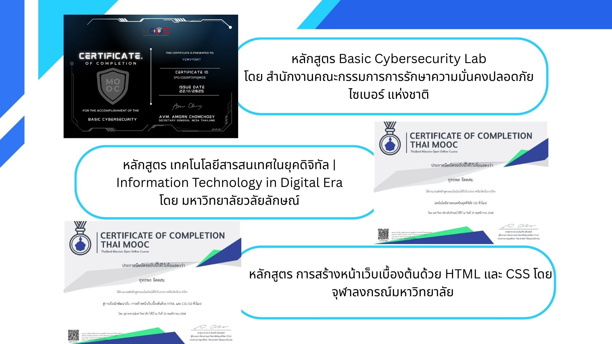
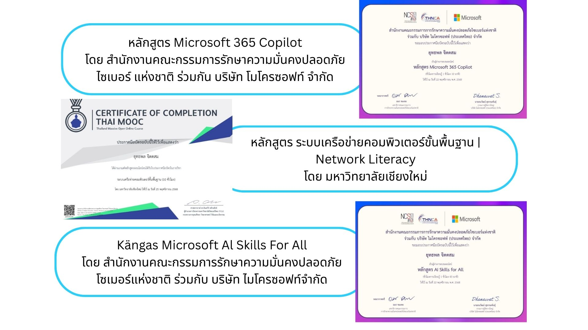
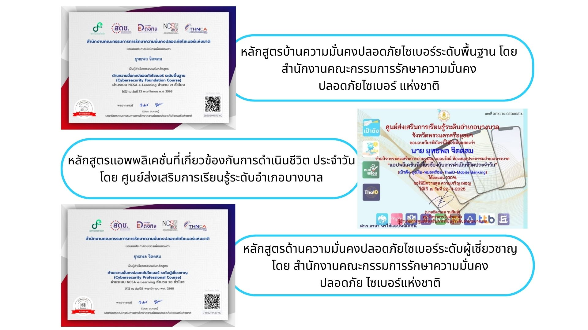
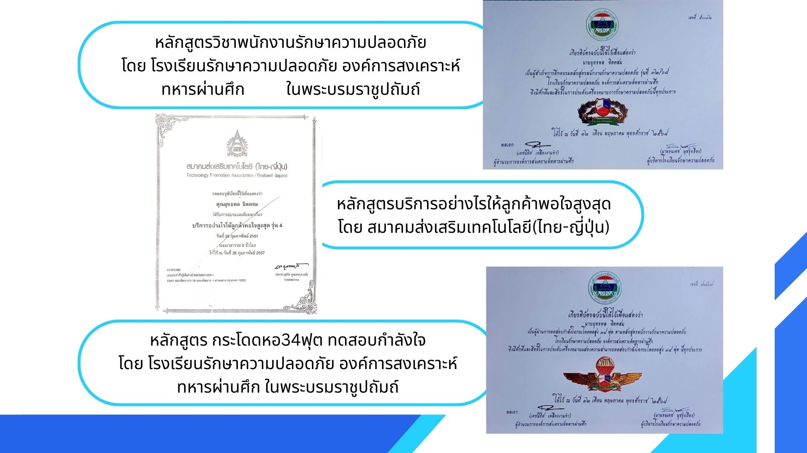

-ข้าพเจ้าจัดทำ “Portfolio” นี้เพื่อเป็นตัวแทนนำเสนอเอกสารข้อมูลเกี่ยวกับ ประวัติส่วนตัว ประวัติการศึกษา ความรู้ ความสามารถ ทักษะ และ ความสนใจพิเศษรวมทั้งเกียรติบัตรตลอดจนพัฒนาการทางด้านต่างๆของข้าพเจ้า
-ข้าพเจ้ามีความมุ่งหวังว่า จากประสบการณ์การทำงานที่ผ่านมา เช่น การทำเว็บไซต์ กราฟฟิค อนิเมะชัน2D , การซ่อมอุปกรณ์สำนักงาน , การรักษาความปลอดภัย อาคาร สถานที่ และบุคคล , การดูแลกฏระเบียบ ข้อบังคับ , การตรวจตรา ควบคุม , การระงับเหตุ ไม่ว่าจะเป็นการวิวาท อัคคีไฟ ฯ , ยุทธวิธีการจับกุมด้วยมือเปล่า , ประสบการณ์การบริหารการทำงานเป็นทีมแก้ปัญหาและทำงานภายใต้ความกดดันได้ดีมาก เป็นต้น
-ข้าพเจ้าหวังว่า “Portfolio” นี้จะทำให้ทุกท่านที่อ่านได้เห็นคุณค่าและความสามารถโดยรวมของข้าพเจ้า
สาขาคอมพิวเตอร์ธุรกิจ - วิทยาลัยเทคโนโลยีเอ็นเทคบริหารธุรกิจ
สายวิทย์-คณิต - โรงเรียนแวงพิทยาคม




เบอร์โทรศัพท์: 086-3045053
อีเมล: Flowstate.d.y@gmail.com
Line ID: dodo_1035